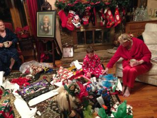
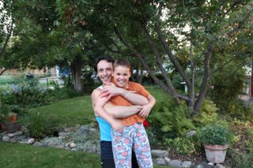
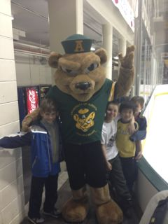
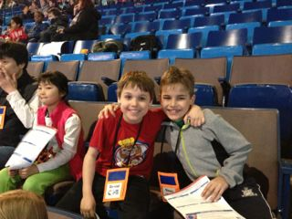
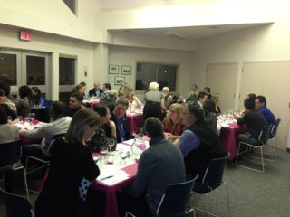
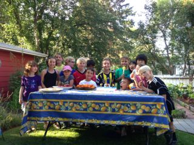
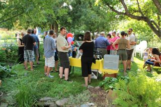
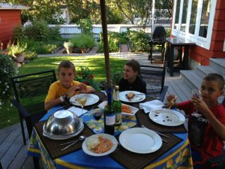

Our 2013 end-of-the-year blog is also available
in Portuguese.
Edições anteriores estão aqui.

 Traditions are important. Thus, even though I found myself seating on te porch of our rented beach-front property with a beautiful view of the North Bay in the magic Island of Santa Catarina in Brazil on this day before Christmas, we will still try to write you this end-of-year blog. We also collected a dried tree branch on the beach and will decorate it with shells and flowers for our Christmas tree, and even though the cookies will be store bought, we will decorate them ourselves and leave the slices of carrots for the reindeer tonight in expectation for the arrival of Santa Claus. You will get this message sometime later because one of the blessings of this beautiful spot is that it has no internet connection and allows us to have a break from our always-connected life.
Traditions are important. Thus, even though I found myself seating on te porch of our rented beach-front property with a beautiful view of the North Bay in the magic Island of Santa Catarina in Brazil on this day before Christmas, we will still try to write you this end-of-year blog. We also collected a dried tree branch on the beach and will decorate it with shells and flowers for our Christmas tree, and even though the cookies will be store bought, we will decorate them ourselves and leave the slices of carrots for the reindeer tonight in expectation for the arrival of Santa Claus. You will get this message sometime later because one of the blessings of this beautiful spot is that it has no internet connection and allows us to have a break from our always-connected life.
This is a big contrast with our 2012 Christmas that we spent quietly with Grandma and Grandpa Meadows in their beautifully decorated house in Oklahoma. On the days after Christmas there Daniel had plentiful of play time with his cousins. Here in Brazil his play time is soccer on the beach and swimming with kids and young adults that do not speak English.
 One of the important encounters for Daniel every time we went to Oklahoma was to see "Great". This is the way he always called his GreatGrandma Meadows. According to him he called her "Great" because she was his greatgrandma and also because she was great. They always had a happy time together and Daniel always would slow down from his usual very busy self to talk to her. Unfortunatelly 2013 saw the passing of Great and we will miss her dearly.
One of the important encounters for Daniel every time we went to Oklahoma was to see "Great". This is the way he always called his GreatGrandma Meadows. According to him he called her "Great" because she was his greatgrandma and also because she was great. They always had a happy time together and Daniel always would slow down from his usual very busy self to talk to her. Unfortunatelly 2013 saw the passing of Great and we will miss her dearly.


Following tradition, in January we had our Christmas-after-Christmas party after we went back home and Winter activities were dominated by hockey practices and games, building snow forts at school, and playing floor hockey in our basement. We also had lots of great "student night" dinners at our house with several of the Brazilian undergruate students that were in Edmonton with the Science Without Borders program. Each weekday dinner was followed by a game of "knee hockey" coordinated by Daniel. We became friends with several students, but Daniel got connected to Renata, Serafim, and in a very special way to Luckas.
We also watched many Golden Bears hockey games at the University of Alberta and even one Pandas' game (the female hockey team for the university). Daniel best times were when we invited some of his closest friends to come along to the games.

In February, Daniel's grade-3 class had "ice-school" --- a whole week of classes at the Edmonton Oiler's hockey arena. On the Wednesday I was one of the parent volunteers and that was the day that the Oil Kings had a demonstration hockey game for more than 6000 kids from many schools around Edmonton. This is one of those "only in Canada" things where a game of hockey is a legitimate field trip for grade schools.

In February we also led the organization of a wine-tasting fundraising for Daniel's school. I did most of the cooking for the evening and Scott was responsible for the pairing of the wine with the food. We sold more than 60 tickets for the evening and had one of the most successful fundraisers for the year for the school. We got very positive feedback both for the food and for the quality of the pairings of food with wine.
At the start of Spring Break I flew with Daniel to Dallas to leave him with his grandparents in Oklahoma. From there I went to Brazil and spent almost three weeks at Unicamp in Campinas working on a very fruitful collaboration with collegues there. From Brazil I went to Germany for my first Daghstul workshop. It was a great experience to spend a whole week in a location with a group of colleagues with expertise on the same area. The Daghstul setting is also very nice and conducive to great interactions. Then I spent a week in Prague for another conference and finaly went home after five weeks away. In the meantime the grandparents flew to Edmonton with Daniel and spent some time with him and Scott there. After five weeks on the road eating "event food" I had gained some weight and decided to rethink my diet. As a consequence I visibily lost weight and had many people asking me if it was on purpose. It is.
During the Spring term and continuing in the Summer I got involved in an interesting research project that we eventually called Nohomophobes 2.0. The existing Nohomophobes project records how many times the expressions "faggot", "dyke", "No homo", and "So gay" are used in tweeter. Our project does a crowd sourcing asking people to manually label the tweets as pejorative or non-pejorative. We hope to use machine-learning techniques to train a model that will allow us to do this classification authomatically. We continue to look for volunteers to help label the tweets.
 May and June were busy with community soccer and a bit of travel for me --- Toronto and Seattle this time. July and August were Summer camp months for Daniel with all kinds of sports including hockey, golf, soccer, basketbal, curling, and swimming. I went to Lyon in France for a great small workshop and had the opportunity to experience what is regarded as one of the best cuisines in France and also to visit with some dear colleges.
May and June were busy with community soccer and a bit of travel for me --- Toronto and Seattle this time. July and August were Summer camp months for Daniel with all kinds of sports including hockey, golf, soccer, basketbal, curling, and swimming. I went to Lyon in France for a great small workshop and had the opportunity to experience what is regarded as one of the best cuisines in France and also to visit with some dear colleges.
For father days in June our family was featured in the Edmonton journal in a feature that had the purpose of addressing how children of non-traditional families deal with mothers day and fathers day. We receive lots of positive feedback about allowing the press in our house for that feature.


The high point of August was our traditional Summer gathering in our backyard around Daniel's birthday. We again had a very successful event. Scott now has many acquaintances in the wine retail business and thus this year we had many guests that came from those circles. The wine selection was sure much superior in comparison with previous years, and both the kids party and the grown-up party were great events. We were once again very fortunate witht the weather with the rain arriving one day only minutes after the last guest left.
 After our Summer celebrations we enjoyed a few days in Drumheller, one of the best places in the world for dinosaur fossil spotting. Daniel loved his visit to the Royal Tyrell museum with grandma and grandpa and we also had a tour of the badlands where many dinosaur fossils are still dug and where one can see educational examples of how digging was done on the early days of discoveries and how it is done today.
After our Summer celebrations we enjoyed a few days in Drumheller, one of the best places in the world for dinosaur fossil spotting. Daniel loved his visit to the Royal Tyrell museum with grandma and grandpa and we also had a tour of the badlands where many dinosaur fossils are still dug and where one can see educational examples of how digging was done on the early days of discoveries and how it is done today.

Some of the best Summer moments were when Daniel's closest friends, Dennis and Sinan, would come to play and stay over for dinner. Daniel had a great time hosting dinner for his friends in our deck in the backyard.
I was once again teaching three classes in the Fall term at the University and thus September to December is a blur of very very early mornings in order to keep up with all the activities required. Meeting great students in my classes and following their progress through their training is the major reward for that. Going to Edinburgh for a conference early in September made things even more hectic.
During the Canadian Thanksgiving week in October I received my colleague Guido Araujo from Unicamp for an academic visit and we were very fortunate to have Fran Moore visiting from Brisbane in Australia during the same time. It was quite fun to have friends that live in oposite ends of the globe at the home at the same time and we also had several opportunities to visit with Fran while she was in Edmonton.
Daniel continues to struggle academically in school an we continue to do a significant amount of work at home wiht what we call "Home School" on the weekends to help him keep progressing in his leaning. He also made poor choices at some times during the Fall in terms of the way he relates with his friends. The school principal has my number in her speed dial and I am one of the most frequent visitors to her office. But we have a great relationship and do our best to support Daniel on all aspects of his growth.
 Scott's liquor/wine store, Ashton's Liquor, is doing very well. He developed important relationships with several representatives for wine and liquor in town and also started supplying some restaurants. The store has seen an increase in sales and, to his satisfaction, he has seen many more customers that are interested in better products coming through the doors. He also took a partner into the business in the Fall and that has taken some pressure off him in terms of organizing the schedule, placing the orders, etc.
Scott's liquor/wine store, Ashton's Liquor, is doing very well. He developed important relationships with several representatives for wine and liquor in town and also started supplying some restaurants. The store has seen an increase in sales and, to his satisfaction, he has seen many more customers that are interested in better products coming through the doors. He also took a partner into the business in the Fall and that has taken some pressure off him in terms of organizing the schedule, placing the orders, etc.
It is much harder to find time to compose a blog at a nice beach location than in a house in a cold climate. Even though I started this on Christmas eve, we are already half way through to the new year. The days here have been wonderfully relaxing. Putting work aside and staying disconnected allowed us to have very long conversations with family, and allowed me to spend lots of time with Daniel, and also doing some cooking with local ingredients. I hope you are also having a peaceful end-of-year holidays.
Here to a great 2014!
Nelson, Scott & Daniel
 Traditions are important. Thus, even though I found myself seating on te porch of our rented beach-front property with a beautiful view of the North Bay in the magic Island of Santa Catarina in Brazil on this day before Christmas, we will still try to write you this end-of-year blog. We also collected a dried tree branch on the beach and will decorate it with shells and flowers for our Christmas tree, and even though the cookies will be store bought, we will decorate them ourselves and leave the slices of carrots for the reindeer tonight in expectation for the arrival of Santa Claus. You will get this message sometime later because one of the blessings of this beautiful spot is that it has no internet connection and allows us to have a break from our always-connected life.
Traditions are important. Thus, even though I found myself seating on te porch of our rented beach-front property with a beautiful view of the North Bay in the magic Island of Santa Catarina in Brazil on this day before Christmas, we will still try to write you this end-of-year blog. We also collected a dried tree branch on the beach and will decorate it with shells and flowers for our Christmas tree, and even though the cookies will be store bought, we will decorate them ourselves and leave the slices of carrots for the reindeer tonight in expectation for the arrival of Santa Claus. You will get this message sometime later because one of the blessings of this beautiful spot is that it has no internet connection and allows us to have a break from our always-connected life.


{kind=link}
{kind=link}
{kind=link}
{kind=link}
{kind=link}
{kind=link}
{kind=link}
{kind=link}
{kind=link}
{kind=link}